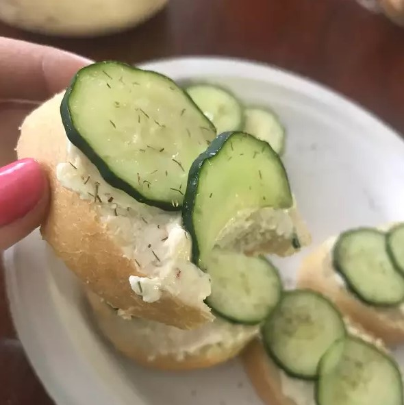

Dill Cucumber Toasties

Description:
Its a super easy snack to make for parties and everyone loves it!
Ingredients:
- 1, 8 ounce, package cream cheese, softened
- 1, .7 ounce, package dry Italian-style salad dressing mix
- 1/2 cup mayonnaise
- 1 French baguette, cut into 1/2 inch thick circles
- 1 cucumber, sliced
- 2 teaspoons dried dill weed